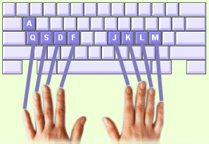

Zoals de meeste Belgische gebruikers, gebruikt u een toetsenbordindeling die AZERTY wordt genoemd. Om met deze toetsenbordindeling verder met TypingMaster te kunnen werken, zult u nu ook de letter A leren typen. De toets voor de letter A vindt u aan de linkerkant van het toetsenbord, boven de letter Q. |
 |